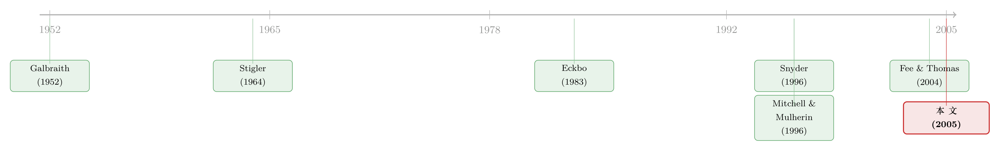

把饼做大，还是把同行的饭碗端走？——一桩横向并购的「三方验尸」
本文读的是 Shahrur (2005, Journal of Financial Economics)：用 1987–1999 年 463 桩横向并购，去看公告日里对手、供应商、企业客户三方股价同时怎么动。结论是——当并购给收购方和目标公司创造价值时，对手、供应商、客户也一起赚钱；这与「合谋」「买方势力」靠掠夺上下游获利的故事不符，而更像是效率在驱动这一波并购。但作者同时发现：如果供应商高度集中，并购确实会增强买方的议价势力。
1 一个老问题，和一个新的看法
横向并购——两家做同样生意的公司合到一起——几乎是反垄断教科书的第一页。直觉很朴素：少了一个对手，剩下的人就更容易抬价、更容易合谋，最后买单的是消费者和上游供应商。这就是 Stigler (1964) 那条经典逻辑：并购减少了行业里的厂商数目，降低了监督合谋的成本，于是合谋更容易达成。
可问题来了。如果一桩并购真是为了「抬价合谋」，那受益的应该是合并双方和它们的同行对手（大家一起涨价），受损的应该是被压榨的供应商和下游客户。但如果并购其实是为了「把生产搞得更有效率」呢？那对手的命运就说不准了——它们可能因为行业里冒出一个更强的对手而受伤，也可能因为「原来这门生意还能这么做」而沾光。
于是一个自然的问题是：我们怎么把「抬价」和「提效」这两个动机，从股价里分辨出来？
这正是这篇论文的全部张力所在。它的聪明之处，不在于又跑了一次并购的事件研究 (event study)，而在于它把镜头同时对准了三类旁观者：行业对手（rivals）、上游供应商（suppliers）、下游企业客户（corporate customers）。三方的股价反应放在一起，就像一桩案子的三份独立证词——彼此印证，或者彼此拆台。
2 三个假说，三套预言
要让股价说话，得先想清楚每一种动机会留下什么样的「指纹」。论文把候选动机收敛成三个，并为每一个写下它对四类主体（合并方、对手、客户、供应商）股价的预言。
效率假说 (productive efficiency)。 并购让合并后的企业生产更有效率，边际成本下降。合并方自然捕获这部分「超边际租金 (infra-marginal rents)」，股价上涨。但对对手的影响是「不受限的 (unrestricted)」：一方面，多出一个更高效的对手意味着更激烈的竞争（利空）；另一方面，这桩并购可能在告诉整个行业「生产率普遍可以提升」，甚至增加对手自己被收购的概率（利好，见 Song and Walkling, 2000）。对供应商和客户的影响同样不确定，取决于这是一桩「扩张型 (scale-increasing)」还是「收缩型 (scale-decreasing)」的并购。
合谋假说 (collusion)。 这是 Stigler (1964) 和 Eckbo (1983) 的逻辑：并购抬高了行业的合谋能力，合并方和对手一起赚到更高的垄断租，所以合并方与对手股价上涨；而抬价、限产意味着供应商和客户受损，股价下跌。注意这里的关键——合谋让对手搭便车地受益。
买方势力假说 (buyer power)。 这条线来自 Galbraith (1952) 的「抗衡势力 (countervailing power)」和 Snyder (1996) 的动态模型：一个更大的买家，能在面对垄断或寡头供应商时压低投入价格。于是合并方受益、供应商受损；按 Snyder (1996)，对手也会因为上游竞争被激化而沾光；对客户的影响则不确定。
把这三套预言并排放，你会发现它们在一处正面交锋：
| 合并方 | 对手 | 客户 | 供应商 | |
|---|---|---|---|---|
| 效率 | + | 不定 | 不定 | 不定 |
| 合谋 | + | + | － | － |
| 买方势力 | + | + | 不定 | － |
三者都预言合并方受益（不然没人并购），但供应商和客户的命运才是真正的分水岭：合谋说两者都遭殃，买方势力说供应商遭殃，唯独效率说「不一定」。这就是 Eckbo (1983) 那句被反复引用的话——「原则上，我们可以通过考察合并方的企业客户和供应商的异常收益，来区分合谋与效率理论」——这篇论文，正是把这句话做成了一个大样本检验。
3 识别策略：用一张「投入产出表」把上下游钉出来
读到这里，聪明的读者会立刻追问：你怎么知道谁是这桩并购的供应商、谁是它的客户？
这正是全文方法论上最硬的一环。论文没有去逐家公司翻年报找客户名单，而是搬来了一件产业经济学的重器：美国商务部经济分析局每五年发布一次的基准投入产出账户 (benchmark input–output accounts)，其中的 Use 表，对任意一对「供应商行业—客户行业」，给出了前者的产出有多少美元被用作后者生产的投入。
这套办法的逻辑链条是：
- 先用 SDC 数据库挑出横向并购——收购方和目标公司共享同一个四位 SIC 码。这里有个细节值得点名：作者用的是 Compustat 的历史 SIC 码 (Historical SIC Code)，而不是当前 SIC 码。Kahle and Walkling (1996) 早就指出，大量公司会随时间改换主营 SIC 码，用当前码会引入分类误差。
- 再用 IO 表，把这桩并购所在的「并购行业 (takeover industry)」的上游行业（供应它投入的）和下游行业（使用它产出的）一一识别出来。
- 然后在这些上下游行业里，构造对手、供应商、客户三类公司的组合，跑事件研究，看公告窗口里的累计异常收益 (cumulative abnormal returns, CAR)。
有意思的是样本构造里的几个「自缚手脚」的选择，反而增强了说服力：
论文只保留 单一业务部门 (single-segment) 的对手、供应商、客户公司。这么做有三重考虑：一是多元化公司常常有大量业务部门压根不受这桩并购影响，纳入它们只会稀释检验功效（McAfee and Williams, 1988）；二是排除掉那些本身就有部门在并购行业里经营的公司，避免信息外溢污染；三是排除那些「既是对手又是上下游」的身份混淆。作者也报告，用全样本重做结果定性一致。
还有一个会让人皱眉、但作者诚实交代的选择：样本只含成功完成的并购（收购方至少拿到目标 15% 的流通股，门槛沿用 Kale et al., 2003）。这会不会让结果偏向反对合谋假说？毕竟监管者可能把一些潜在反竞争的并购给拦下来了。作者的辩护是：1987–1999 年美国反垄断政策本就宽松（Kwoka and White, 1999），所以这个偏误有限——换句话说，这正好把检验变成了「在宽松监管下，潜在合谋的并购到底有没有溜过去」的一次自然检验。
数据规模上：剔除金融公司（SIC 6000–6999）、要求买卖双方都是有 CRSP 和 Compustat 数据的美国上市公司后，剩下 352 桩兼并加 111 桩要约收购，共 463 桩。收购方市值均值（中位数）$5,996 百万（688 百万），目标公司 $526 百万（100 百万）——典型的「大鱼吃小鱼」。样本覆盖 142 个四位 SIC 码，约占全部上市公司四位 SIC 码的三分之一，并不算窄。
4 主要结果：当饼做大时，桌上每个人都分到了
先看平均效应。和过往文献一致（Jensen and Ruback, 1983; Jarrell et al., 1988; Andrade et al., 2001），并购公告平均给目标加收购方带来正的合并财富效应。而旁观三方里：对手和企业客户赚到了正的异常收益，供应商则吃了一记利空。
单看这个平均结果，其实有点模棱两可——它既不像纯效率，也不像纯合谋。但真正关键的一步在于，作者把样本按「合并财富效应」的正负切成两半：
- 正效应子样本（约占
60%）：这类并购给合并双方创造了价值，三种动机（效率、合谋、买方势力）都可能在场。结果是——对手、供应商、企业客户三方都获得了显著为正的异常收益。
于是反转出现了。如果是合谋或买方势力在驱动，供应商和客户本该受损；可它们偏偏跟着一起赚钱。这个「一荣俱荣」的格局，恰恰是效率假说才能解释的——并购把整块饼做大了，上下游都从更高的产出、更低的成本里分到了一杯羹。
- 负效应子样本：合并双方价值被毁的那些并购，对手、供应商、客户三方也都获得显著为负的异常收益。这一边怎么解释？如果是代理问题在作祟（Morck et al., 1990; Harford, 1999; Datta et al., 2001），那么价值毁灭会沿着产业链外溢。但作者也提醒，对手显著为负这一点，同样契合 Mitchell and Mulherin (1996) 的看法——并购不过是行业基本面变化的「信使 (message bearers)」，股价跌的是被并购捎来的坏消息。
5 横截面：把「合谋」和「买方势力」分头审问
光看符号还不够。论文接着做横截面回归，去检验两个更精细的预言。
第一刀，砍向合谋。 按「市场集中度学说 (market concentration doctrine)」（Eckbo, 1985, 1992），如果并购真有反竞争效应，那么并购导致的行业集中度提升越大，合谋红利就该越高，合并方和对手的异常收益也该越高。可数据给出的是反方向：并购引致的集中度上升，与合并方及其对手的异常收益负相关，与供应商、客户的异常收益则不相关。
这等于把 Eckbo (1983, 1985, 1992) 那套「不支持合谋」的结论，从他研究的 1963–1981 年，延伸到了近期这一波并购潮。作者由此推断：尽管近年反垄断执法相对宽松，但并购并没有因此变成「以反竞争为主」。
第二刀，却给买方势力留了活口。 这是全文最微妙的地方。沿着 Snyder (1996, 1998) 和 Stole and Zwiebel (1996) 的「买方规模效应」，作者发现：如果供应商行业高度集中、且并购造出一个相对于独立的买卖双方而言「更大」的企业，那么合并双方的合并财富效应更高；而这种增强的买方势力，对集中的供应商的负面冲击，在「合并双方相对并购行业本身也很大」时尤为明显。
换句话说——平均而言效率是主旋律，但在供应商集中这个特定角落里，买方势力是真实存在的。这也和独立完成的 Fee and Thomas (2004) 相互呼应：那篇论文用 FASB No. 14 要求披露的「占销售额 10% 以上的大客户」信息来识别上下游，路径完全不同，却同样得出「不支持合谋、部分支持买方势力」的结论。两条独立的证据链指向同一个方向，这比任何稳健性检验都更有分量。
最后还有一组「经济基本面在定价」的漂亮证据：供应商行业卖给并购行业的产出占比越高，供应商的异常收益（绝对值）越大；并购行业的产出作为客户行业投入越重要，客户的异常收益越大。 也就是说，股价反应的大小，精确地跟着 IO 表里那条「谁离谁更近」的经济纽带在走。市场不是在瞎反应。
6 文献脉络
把这条线索捋一遍，它的来路其实很清楚。
最早的源头是产业组织：Galbraith (1952) 提出「抗衡势力」，Stigler (1964) 给出了合谋的微观机制——少了对手，监督背叛就更容易。金融学这边真正把它做成可检验命题的是 Eckbo (1983)：他想到，与其去猜并购会不会合谋，不如看对手的股价——合谋利好对手，效率则未必。Stillman (1983)、Eckbo (1985, 1992)、Eckbo and Wier (1985) 一路做下来，结论基本一致：不支持合谋。

但 Eckbo (1983) 自己就埋了一个伏笔——他说，真正干净的区分，应该去看供应商和客户的反应。这个建议悬了二十年，直到投入产出表被引入公司金融（Fan and Lang, 2000 的相关度测量是这条技术线的代表），才让大样本识别上下游成为可能。买方势力那一支则由 Snyder (1996, 1998)、Stole and Zwiebel (1996)、Chipty and Snyder (1999) 在理论上补齐。本文 Shahrur (2005) 与 Fee and Thomas (2004) 几乎同时，用两套不同的识别方法，第一次把「对手 + 供应商 + 客户」三方一起搬上检验台，完成了 Eckbo 当年的那个设想。
（关于横向并购到底是「做大饼」还是「抬价格」，以及如何用产品相似度去识别反竞争效应，可参见《并购是为了把饼做大，还是把价抬高？——答案藏在「产品像不像」里》，那是这条问题在更晚近、用文本相似度做识别的一次推进。）
7 评论与延伸（Q&A + 研究方向）
(a) 几个可能的疑问
Q：为什么「供应商和客户一起赚钱」就能否定合谋，而不能用别的故事解释？
因为合谋的本质是沿产业链转移财富——靠抬高产出价、压低投入价，从客户和供应商兜里掏钱给合并方。若客户和供应商在公告日也赚到正收益，说明并购创造的是净增量价值，而非零和的再分配。这是合谋假说在符号上无法兼容的。
Q：只用「成功完成」的并购，会不会系统性地把合谋样本筛掉了？
这是最值得担心的选择性偏误。逻辑上，若监管拦下了反竞争并购，留下的就偏向非合谋，从而偏向拒绝合谋假说。作者的辩护是样本期（1987–1999）执法宽松，故偏误有限——但这只是缓解，不是消除。比较稳妥的读法是：本文检验的是「在宽松执法下，潜在合谋是否溜了过去」，而非「所有并购是否合谋」。
Q：用四位 SIC 码界定「横向」，会不会太粗或太细？
两头都有风险：太粗会把并不真正竞争的公司算成对手，太细会漏掉跨细分市场的竞争。作者用历史 SIC 码（而非当前码）缓解了 Kahle and Walkling (1996) 指出的分类漂移问题，并且把分析限制在单一业务部门公司，进一步降低身份混淆。但 SIC 终究是行政分类，不等于经济意义上的「竞争对手」，这是后来用产品文本相似度的研究要解决的痛点。
Q：投入产出表是行业层面的，可个别并购的真实上下游是公司层面的，这中间的错配有多严重？
这是 IO 方法与 Fee and Thomas (2004) 用 FASB No. 14 客户披露方法的核心分野。IO 表覆盖面广、客观，但只能给到行业平均的投入产出关系，无法捕捉某家公司特有的关键客户/供应商；FASB 披露精确到具体大客户，但只覆盖占销售 10% 以上的客户、样本受限。两种方法各有偏误，结论却一致，这反而是最有力的稳健性证据。
Q：负效应子样本里三方都跌，到底说明了什么？
它有两种并不互斥的解读。一是代理问题驱动的价值毁灭并购，其损失沿产业链外溢；二是 Mitchell and Mulherin (1996) 的「信使」观点——并购只是把行业基本面恶化的坏消息捎了出来，对手跟着跌是因为坏消息是行业性的，而非并购本身毁了价值。本文的横截面证据无法完全把这两者分开。
Q：买方势力的证据，会不会只是「大并购本来协同效应就大」的另一种说法？
有这个隐忧。但作者的识别用的是交互项——是「供应商集中 × 并购造出大买家」这个组合预测了更高的合并收益和更差的供应商收益，而不是单纯的并购规模。这个交互结构正是买方势力理论（Snyder, 1996）的特有预言，普通协同效应解释不了「为什么偏偏在供应商集中时才出现」。
(b) 几个可能的研究问题与提案
1. 把这套「三方验尸」搬到公司债市场。 【经济故事】股价反映的是股东的剩余索取权，但横向并购对债权人的影响方向未必相同——效率提升降低违约风险（利好债券），而买方势力增强的现金流波动、或杠杆收购式并购抬高的财务风险（利空债券）。看对手、供应商、客户三方的债券利差在公告日如何变动，能从债权人视角再验一次效率 vs. 合谋。 【可行性】中。需要 TRACE 公司债成交数据匹配并购事件，再用 IO 表识别上下游发债主体；难点是上下游里有公开债券、且公告窗口有成交的公司样本会大幅缩水。
2. 外资持有人是否改变了并购的「财富转移」结构？ 【经济故事】如果一桩横向并购的供应商或客户由大量外资机构持有，跨境信息传导和定价效率可能不同（参见《外资真是「蝗虫」吗？》对外资长期效应的讨论）。外资占比高的上下游，公告日 CAR 是更快、还是被熨平？ 【可行性】中。需要 FactSet/13F 类机构持股数据按国别拆分，匹配 IO 上下游；识别上偏相关性，难以宣称因果，定位为描述性证据更诚实。
3. 重做识别：用产品文本相似度替代 SIC + IO。 【经济故事】SIC + IO 表是行政分类，二十年后我们有了 10-K 产品描述的文本相似度（Hoberg–Phillips 式）来更细地刻画「谁和谁竞争、谁给谁供货」。换一把更锋利的尺子，本文「平均看是效率、供应商集中时是买方势力」的结论还稳不稳？ 【可行性】高。10-K 文本数据公开，方法成熟，并购样本可直接沿用 SDC；属于「换识别、验稳健」的干净增量。
4. 把流动性维度加进来。 【经济故事】本文只看了 CAR 的水平，没看公告冲击有没有改变上下游股票的流动性。若并购释放的是行业性信息，对手和上下游的买卖价差、深度可能在公告窗口里系统性变化——这是「信息究竟流向了谁」的另一条线索。 【可行性】高。日内或日度流动性指标（有效价差、Amihud）可直接计算，事件研究框架现成，唯一成本是数据清洗量。
参考文献
- Andrade, G., Mitchell, M., Stafford, E. (2001). New evidence and perspectives on mergers. Journal of Economic Perspectives 15, 103–120.
- Eckbo, B.E. (1983). Horizontal mergers, collusion, and stockholder wealth. Journal of Financial Economics 11, 241–273.
- Eckbo, B.E. (1985). Mergers and the market concentration doctrine: evidence from the capital market. Journal of Business 58, 325–349.
- Eckbo, B.E. (1992). Mergers and the value of antitrust deterrence. Journal of Finance 47, 1005–1029.
- Fan, J.P.H., Lang, L.H.P. (2000). The measurement of relatedness: an application to corporate diversification. Journal of Business 73, 629–660.
- Fee, C.E., Thomas, S. (2004). Sources of gains in horizontal takeovers: evidence from customer, supplier, and rival firms. Journal of Financial Economics (Article in Press).
- Galbraith, J.K. (1952). American Capitalism: The Concept of Countervailing Power. Houghton-Mifflin, Boston.
- Kahle, K.M., Walkling, R.A. (1996). The impact of industry classifications on financial research. Journal of Financial and Quantitative Analysis 31, 309–335.
- Mitchell, M.L., Mulherin, J.H. (1996). The impact of industry shocks on takeover and restructuring activity. Journal of Financial Economics 41, 193–229.
- Snyder, C.M. (1996). A dynamic theory of countervailing power. RAND Journal of Economics 27, 747–769.
- Stigler, G.J. (1964). A theory of oligopoly. Journal of Political Economy 72, 44–61.
- Stillman, R. (1983). Examining antitrust policy towards horizontal mergers. Journal of Financial Economics 11, 225–240.
- Stole, L.A., Zwiebel, J. (1996). Organizational design and technology choice under intrafirm bargaining. American Economic Review 86, 195–222.
我的判断：这篇论文的真正贡献不在「又一次否定合谋」，而在方法上把 Eckbo (1983) 那句二十年没人落实的建议变成了大样本现实——用投入产出表把上下游钉出来，让对手、供应商、客户三方的股价同时作证。「正效应子样本里三方一起赚」是全文最有说服力的一击，因为它在符号上直接堵死了合谋的退路。识别上我最在意两点：一是只用成功并购带来的选择性偏误，作者的辩护合理但无法消除；二是 IO 表的行业层面关系与真实并购的公司层面上下游之间的错配——好在它与方法迥异的 Fee and Thomas (2004) 殊途同归，大大缓解了这层担忧。我接下来最想看到的，是把这套三方框架移到债权人视角（公司债利差）和流动性维度上去——股东赚没赚是一回事，债主和市场深度怎么动，可能藏着关于「这块饼到底是做大了还是只是换了手」的另一半答案。